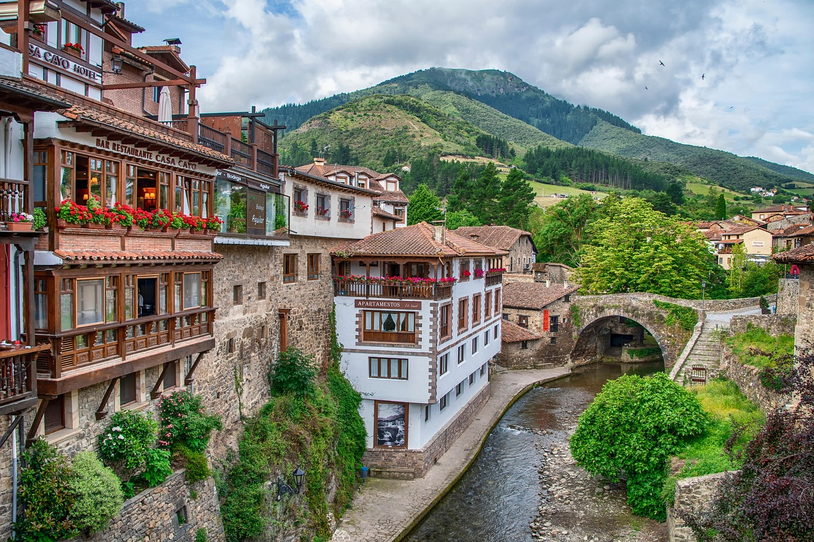
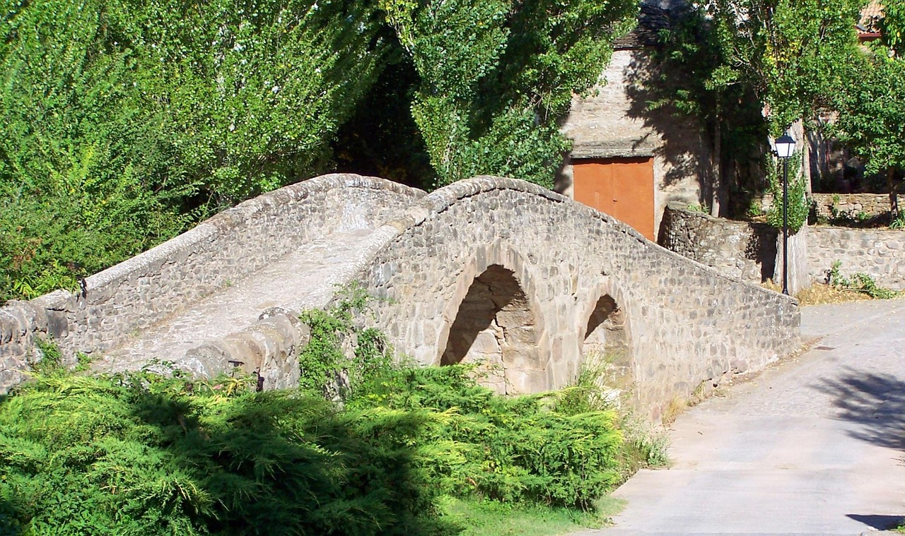

FANTASY / ORIGINAL FICTION
Echoes From Ashes
An emotionally driven fantasy journey through Vesteria, shaped by love, loss, and the possibility of hope.
← ALL PROJECTS
PROJECT OVERVIEW
At a glance
Role: Writer and creator. Original characters, setting, and story development.
Status: In development.
The story
Echoes From Ashes follows John through the fantasy world of Vesteria, where the people he encounters and the relationships he forms shape his journey.
At its heart, the story explores love, grief, and the possibility of moving forward while carrying the memory of those we have lost.
The world of Vesteria
Vesteria is a fantasy setting where architecture and nature exist alongside one another. Among its locations is Emerald City, a community surrounded by greenery, distant mountains, and the wider landscape beyond its borders.
A stone bridge connects part of this world to the road beyond, serving as an important visual element in the development of the story.
Creative approach
The visual direction draws on hand-painted animation, natural landscapes, and fantasy environments. The goal is to develop a world that feels inviting and beautiful while supporting the emotional weight of the narrative.
Visual Development
These photographs are visual research references used to explore Vesteria's environments and the atmosphere of Echoes From Ashes. They are not official story artwork.


Writing samples
An original excerpt from Echoes From Ashes will be added as the manuscript develops.